文本
试题
题尾
卷尾
其他
页面布局

级别 | 考点和演练 | 题型 | 考查内容 |
1级 | 物态和性质 | 选择题 | 晶体与非晶体、液晶 |
2级 | 表面张力现象理解 | 选择题 | 液体表面张力、浸润与不浸润 |
3级 | 热力学第一定律 | 选择题 | 热力学第一定律理解与应用 |
4级 | 理想气体状态变化 | 选择题/计算题 | 气体定律、热力学第一定律 |
5级 | 热力学循环 | 选择题/计算题 | 气体定律、热力学第一定律 |
6级 | 热力学第二定律 | 选择题 | 热力学第二定律理解与应用 |

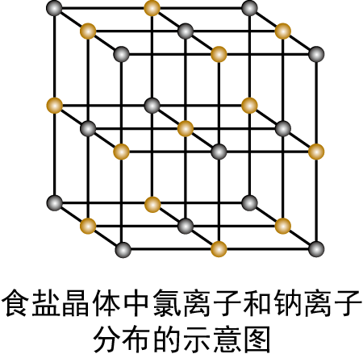
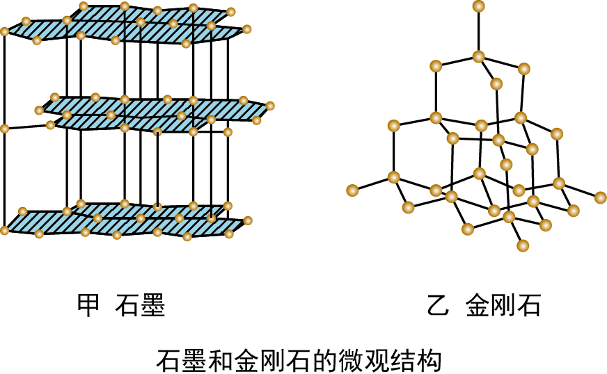
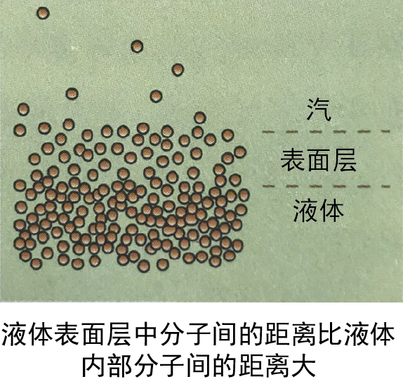
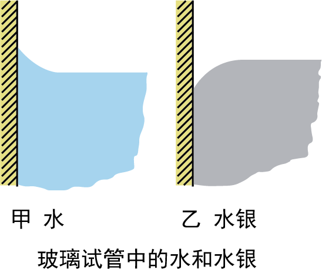
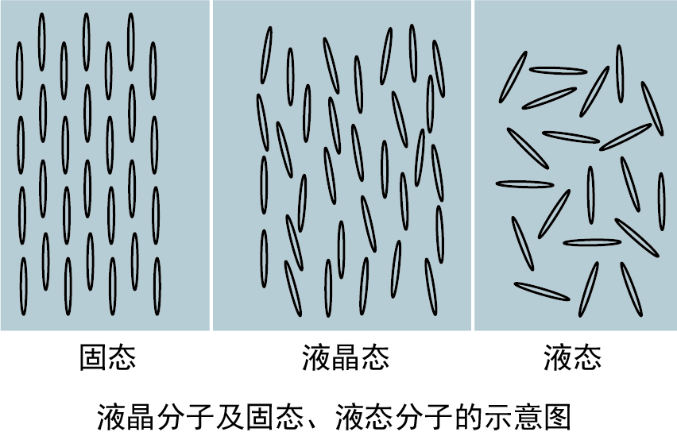
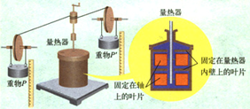
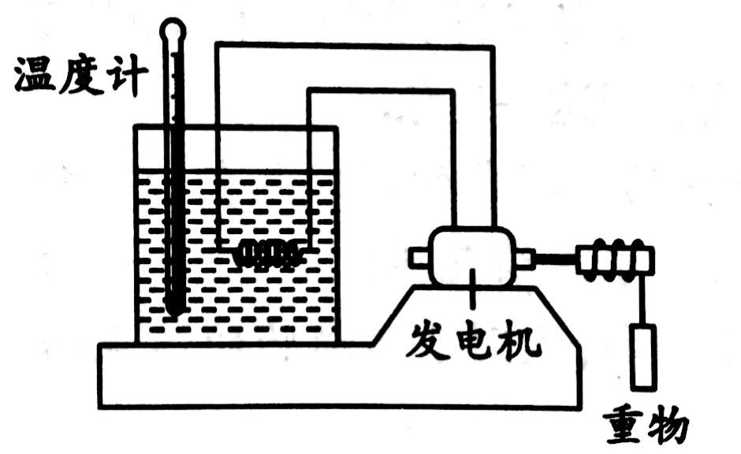

关于固体和液体，下列说法正确的是（ ）

甲、乙两种薄片的表面分别均匀地涂有薄薄的一层石蜡，然后用烧热的钢针针尖分别接触这两种薄片，接触点周围熔化了的石蜡形状分别如图所示．对这两种薄片，下列说法正确的是（ ）
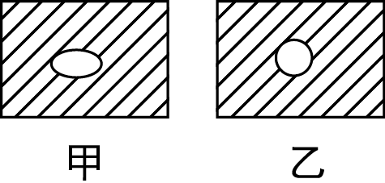
甲的熔点一定高于乙的熔点
甲片一定是晶体
乙片一定是非晶体
乙可能是多晶体
7.关于晶体、非晶体、液晶，下列说法正确的是
下列说法正确的是（ ）
把一枚针轻放在水面上，它会浮在水面，这是由于水表面存在表面张力的缘故
水在涂有油脂的玻璃板上能形成水珠，而在干净的玻璃板上却不能，为是因为油脂使水的表面张力增大的缘故
在围绕地球飞行的宇宙飞船中，自由飘浮的水滴呈球形，这是表面张力作用的结果
在毛细现象中，毛细管中的液面有的升高，有的降低，这与液体的种类和毛细管的材质有关
当两薄玻璃板间夹有一层水膜时，在垂直于玻璃板的方向很难将玻璃板拉开，这是由于永膜具有表面张力的缘故
布伞的伞面有致密的小孔，但不漏水，这与表面张力有关．
玻璃细杆顶端被烧熔后变钝，与表面张力无关.
小船浮在水中，是因为水表面存在表面张力.
关于热学知识的理解，下列说法中正确的是（ ）
关于液体的表面张力，下列说法中正确的是( )
液体在器壁附近的液面发生弯曲的现象，如图Ⅰ和图Ⅱ所示，对此有下列几种解释，其中正确的是（ ）
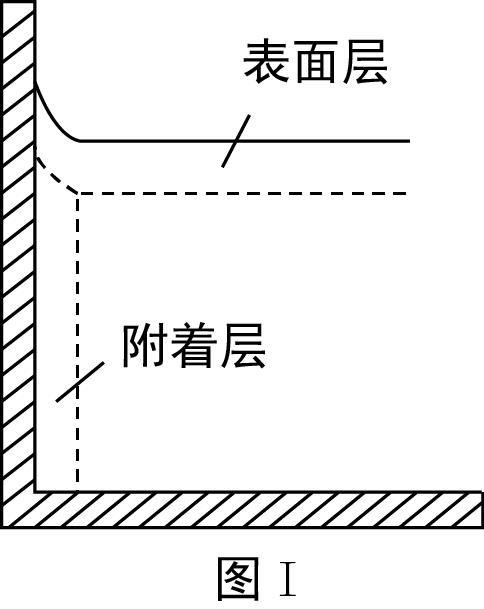 | 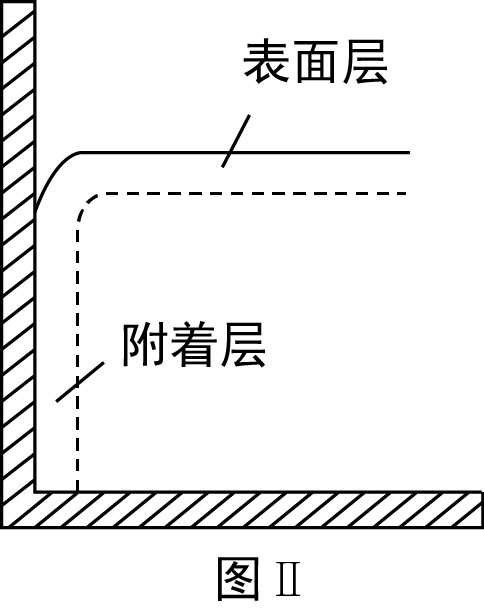 |
图Ⅰ中表面层分子的分布比液体内部疏
图Ⅱ中表面层分子的分布比液体内部密
图Ⅰ中附着层分子的分布比液体内部疏
图Ⅱ中附着层分子所受器壁作用力小于液体分子之间的作用力
水能够浸润玻璃．向正方形的玻璃鱼缸内注入一定体积的水（图中阴影区域）,然后盖上玻璃板，完全密封．如果把这个鱼缸放置在天宫空间站，即处于完全失重的环境中，则稳定后鱼缸内水的形状可能是
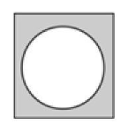
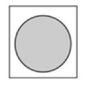
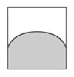
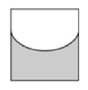
将一只压瘪的乒乓球放到热水中，发现乒乓球会恢复原状．乒乓球内被封闭的气体视为理想气体，在这个过程中，下列说法正确的是（ ）
气体分子的平均动能增大
所有分子的运动速度都变大
气体吸收的热量等于其增加的内能
气体吸收的热量大于其对外做的功
如图所示，在一个配有活塞的厚壁有机玻璃筒底放置一小团硝化棉，迅速向下压活塞，筒内气体被压缩后可点燃硝化棉．在筒内封闭的气体被活塞压缩的过程中（ ）
如图，固定在铁架台上的烧瓶，通过橡胶塞连接一根水平玻璃管，向玻璃管中注入一段水柱。用手捂住烧瓶，会观察到水柱缓慢向外移动，关于烧瓶内的气体，下列说法正确的是（ ）
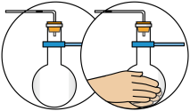
有一种在超市中常见的“强力吸盘挂钩”如图甲所示，图乙、图丙是其工作原理示意图．使用时，按住锁扣把吸盘紧压在墙上（如图乙），然后把锁扣扳下（如图丙），让锁扣以盘盖为依托把吸盘向外拉出，使吸盘牢牢地被固定在墙壁上，若吸盘内气体可视为理想气体，且温度始终保持不变．则在把锁扣扳下的过程中（ ）
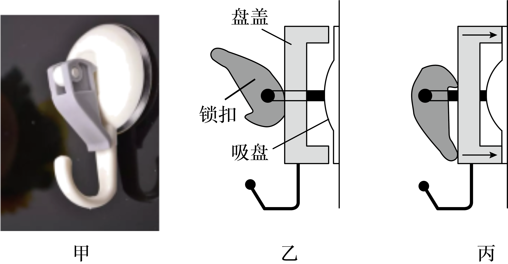
吸盘内气体的密度增大
吸盘内气体压强减小
一定质量的理想气体的体积V随热力学温度T变化的情况如图所示。气体先后经历状态A、B和C，下列说法正确的是（ ）
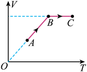
如图所示，一定质量的理想气体由状态a经状态b变化到状态c，已知气体由从状态a变化到状态b的过程中外界对气体做功为
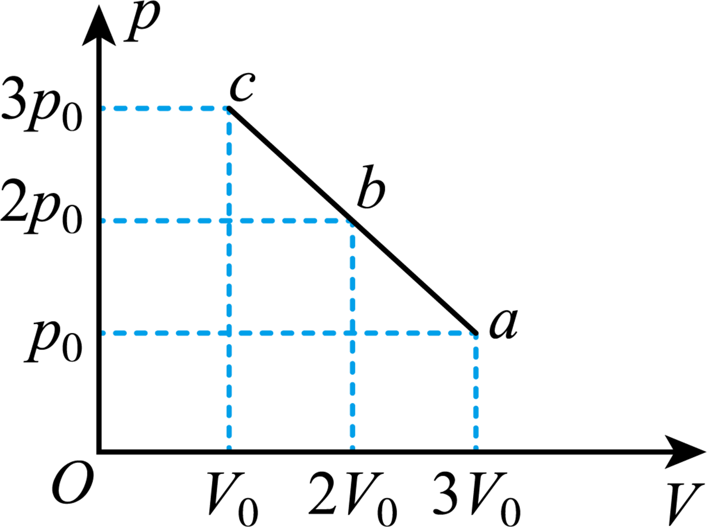
如图，一定质量的理想气体从状态
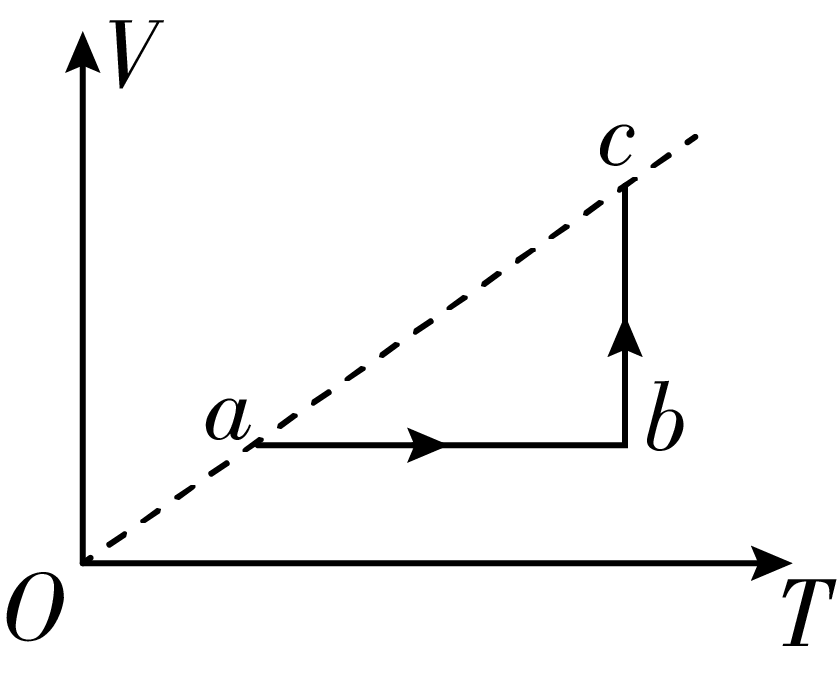
在状态
在状态
在
在
如图所示，一定质量的理想气体由状态A经过状态B变为状态C，其中A→B过程为等压变化，B→C过程为等容变化。已知
（1）请求出气体在状态B时的温度
（2）请求出气体在状态C时的压强
（3）设A→B过程气体吸收热量为
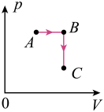
一定质量的理想气体从状态
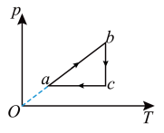
如图所示，一定质量的理想气体从状态a开始，先后经历等容、等温、等压三个过程，经过状态b和c，再回到状态a．下列说法正确的是（ ）
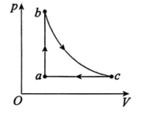
状态a的温度比状态b的温度高
状态a到状态b的过程中气体的分子数密度增加
状态b到状态c的过程中外界对气体做功
状态c到状态a的过程中气体向外界放热
“二氧化碳跨临界直冷制冰”是北京冬奥会的“中国方案”，国家速滑馆5000m2的冰面全由它制成，冰面温差可控制在±0.5℃以内。其制冰过程可简化为图中的循环过程，其中横轴为温度T，纵轴为压强p；过程A→B：一定量的二氧化碳在压缩机的作用下变为高温高压的超临界态（一种介于液态和气态之间，分子间有强烈相互作用的特殊状态）；过程B→C：二氧化碳在冷凝器中经历一恒压过程向外放热而变成高压液体；过程C→D：二氧化碳进入蒸发器中蒸发，进而使与蒸发器接触的水降温而凝固；过程D→A：二氧化碳经历一恒压过程回到初始状态。下列说法正确的是（ ）
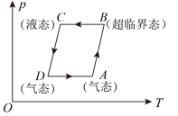
用活塞将一定质量的理想气体封闭在气缸内，改变条件使气缸内气体发生由a→b→c的变化过程，其p-V图像如图所示，其中ac为等温线，已知理想气体的内能与热力学温度成正比，下列说法正确的是（ ）
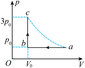
关于热力学定律，下列说法正确的是（ ）
下列说法正确的是（ ）
满足能量守恒定律的宏观过程一定能够自发地进行
物体可以从单一热源吸收热量，使之完全变为功，而不产生其他影响
不可能使热量从低温物体传向高温物体
功转变为热的实际宏观过程是不可逆过程
关于热力学定律，下列说法正确的是（ ）
以下说法正确的是（ ）
关于下列几幅图的说法正确的是（ ）
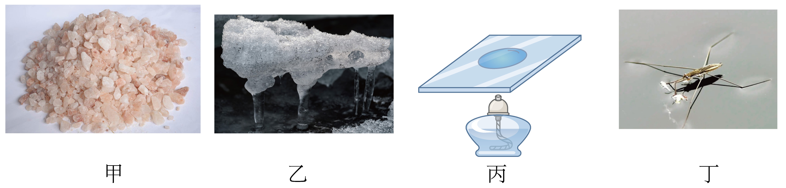
关于液体表面张力和浸润现象，下列说法正确的是
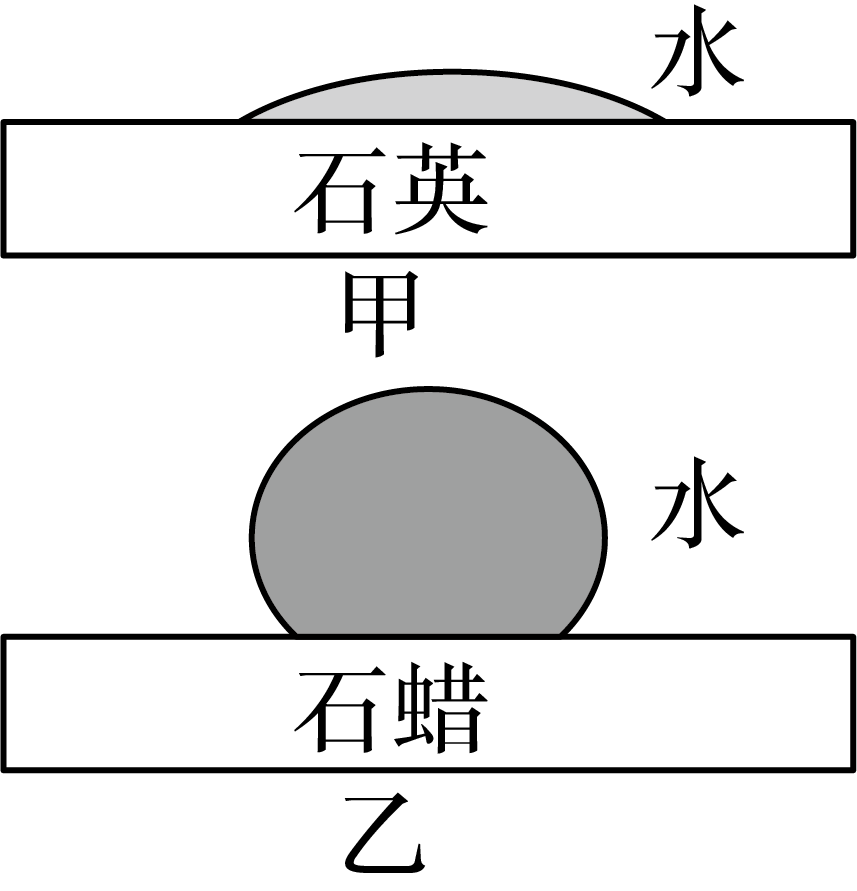
液体表面张力产生的原因是液体表面层分子比较稀疏，分子间引力大于斥力
液体表面张力产生的原因是液体表面层分子比较稀疏，分子间斥力大于引力
图甲是浸润现象，浸润原因是附着层里的分子比液体内部更加密集，附着层分子间表现出排斥力
图乙是浸润现象，浸润原因是附着层里的分子比液体内部更加密集，附着层分子间表现出排斥力
庆典活动中放飞的气球在空中缓慢上升，气球体积逐渐变大。将气球内的气体视为理想气体，忽略环境温度的变化，则球内气体（ ）
如图所示，一定质量的理想气体从状态
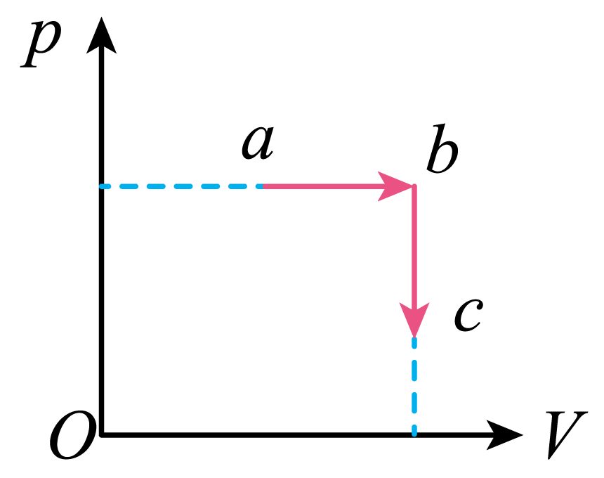
如图所示，一定质量的理想气体从状态A经过状态B、C又回到状态A．下列说法正确的是（ ）
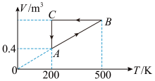
在
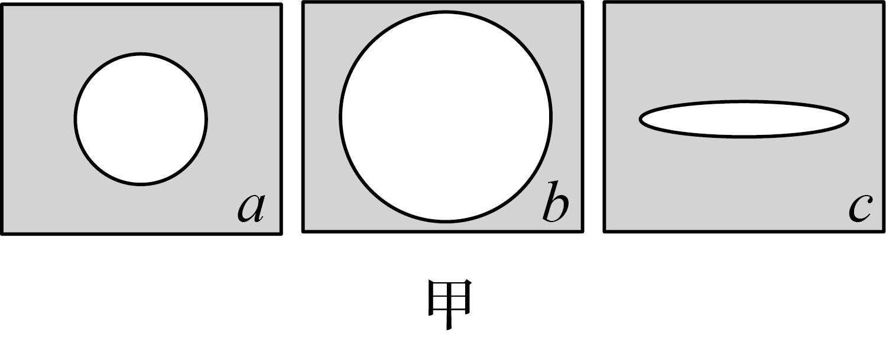
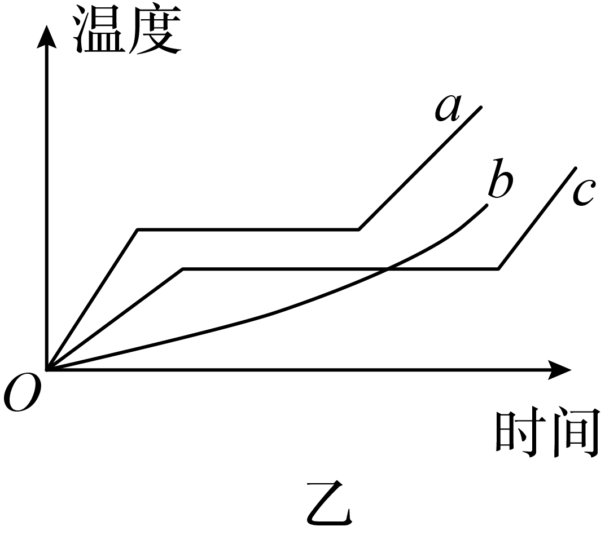
关于晶体和非晶体，下列说法中正确的是（ ）
常见金属是多晶体
多晶体和非晶体都没有固定的熔点
晶体都有规则的几何形状
有的物质在不同条件下能够生成不同的晶体，但以晶体形态存在的物质不会以非晶体形态存在
对于液体在器壁附近的液面发生弯曲的现象，如图所示，对此有下列几种解释．
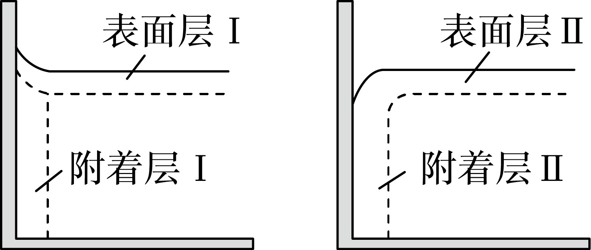
表面层
表面层
附着层
附着层
夏天荷叶上的一颗颗小水珠呈球形，其原因是（ ）
表面张力具有使液面收缩到表面积为最小的趋势
小水珠的重力影响比表面张力小得多
液体内部分子对表面层的分子具有引力作用
水对荷叶是不浸润的
列车运行的平稳性与车厢的振动密切相关，车厢底部安装的空气弹簧可以有效减振，空气弹簧主要由活塞、气缸及内封的一定质量的气体构成．上下乘客及剧烈颠簸均能引起车厢振动，上下乘客时气缸内气体的体积变化缓慢，气体与外界有充分的热交换；剧烈颠簸时气缸内气体的体积变化较快，气体与外界来不及热交换．若气缸内气体视为理想气体，在气体压缩的过程中
我国古代发明的一种点火器如图所示，推杆插入套筒封闭空气，推杆前端粘着易燃艾绒．猛推推杆压缩筒内气体，艾绒即可点燃．在压缩过程中，筒内气体（ ）
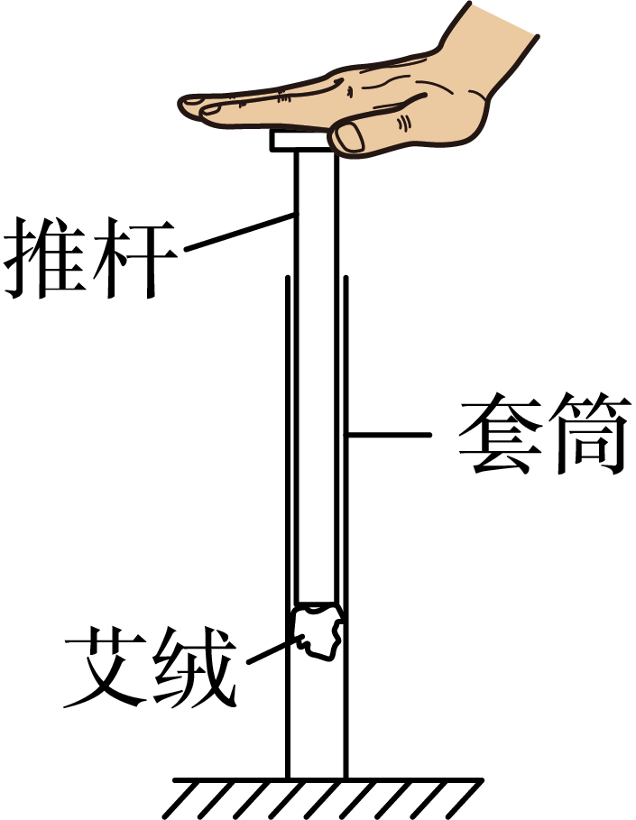
如图所示，一定质量的理想气体从状态a开始，沿图示路径经状态b、c再回到状态a，其中，图线
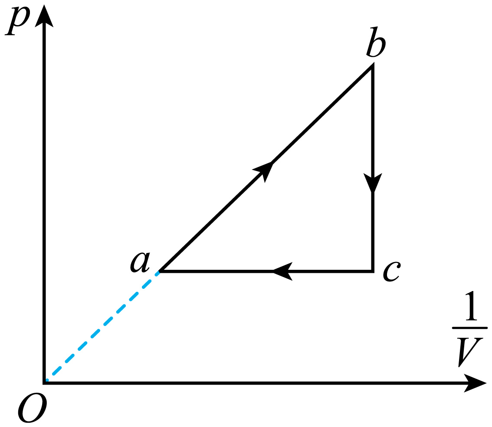
如图所示，一定质量的理想气体从状态
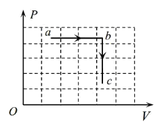
从
从
从
从
一定质量的理想气体从状态a开始，经
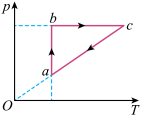
一定质量的理想气体，其压强p与体积V的关系图像如图所示。下列说法正确的是（ ）
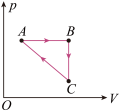
下载设置
![]()